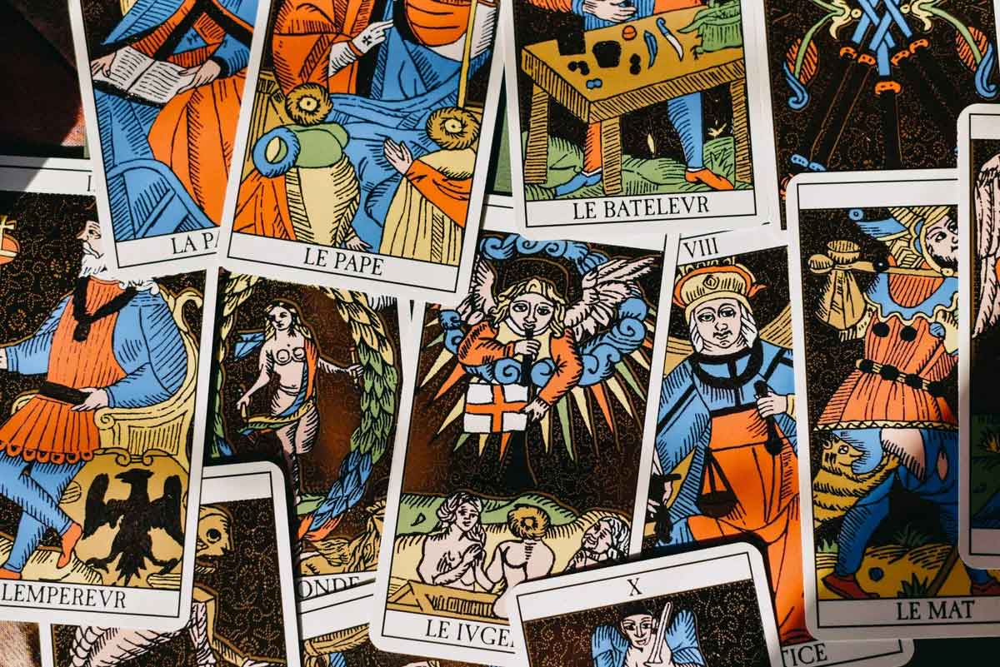
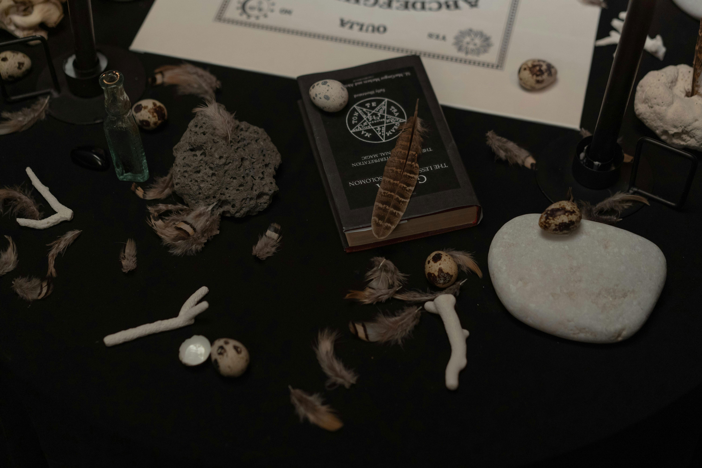
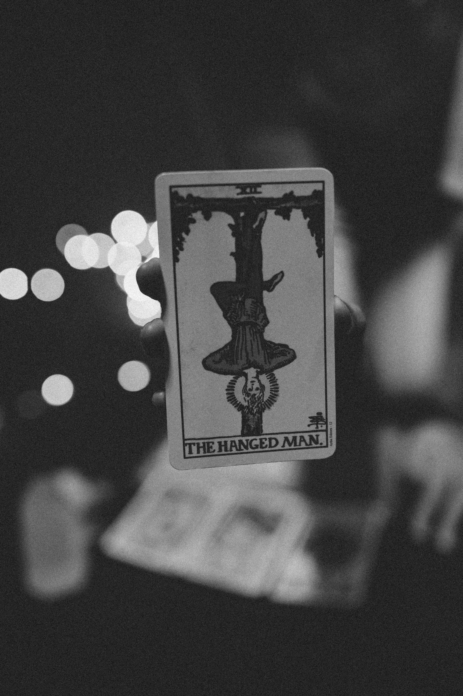

History of Tarot
Origins
The origins of tarot go back to the early 15th century in Europe, where it began not as a mystical tool but as a simple card game. Known as "tarocchi" in Italy, tarot cards were first used in various parts of Italy, France, and Spain. The game was similar to bridge or whist, and the deck included suits, much like a modern playing card deck. The additional "triumph" cards, now called the Major Arcana, were used to trump others during gameplay, making them central to the strategy of the game. There was no association with divination or magic at the time.
Tarot grew in popularity throughout Europe, with Italy, France, and Spain being key regions where the game spread. In France, the cards became known as "tarot," a name that remains today. The French also adapted the original Italian designs, which later became the Marseille Tarot, one of the most recognized tarot decks in history. Despite its growing presence, tarot was still primarily a card game and had not yet taken on its modern association with spiritualism or fortune-telling.
It wasn’t until the 18th century that tarot began to take on an occult significance, marking a major shift in how the cards were viewed. Before this period, tarot was largely seen as a recreational card game with no mystical associations. However, during the Enlightenment, a time when people became increasingly fascinated with ancient cultures, mysticism, and the search for hidden knowledge, tarot caught the attention of scholars and occultists. French and English occultists started to believe that the cards held deeper symbolic meaning, seeing the imagery on each card as more than just a part of the game, but as a representation of universal truths and spiritual lessons.
Modern Magic
By the 19th century, tarot was fully embraced by occultists and mystics. Various esoteric groups, such as the Hermetic Order of the Golden Dawn, integrated tarot into their teachings, believing that each card held profound insights into the human experience. The cards were seen as a reflection of the universe, offering glimpses into personal and cosmic truths. Tarot was no longer just a pastime – it had become a bridge between the mundane and the magical.
In more modern magic practices, tarot remains a key tool for those interested in spirituality and personal growth. Today, it is widely used for divination (the practice of seeking knowledge of the future or the unknown), self-reflection, and meditation, with readers around the world tapping into the cards’ symbolism to gain insight into their lives. While its origins as a game are far from the mystical practice it is now, tarot's evolution shows how something as simple as a deck of cards can transform into a powerful tool for self-discovery and magic. Importantly, tarot is considered an open practice, meaning anyone can engage with and learn tarot without needing to belong to a specific culture, tradition, or belief system.